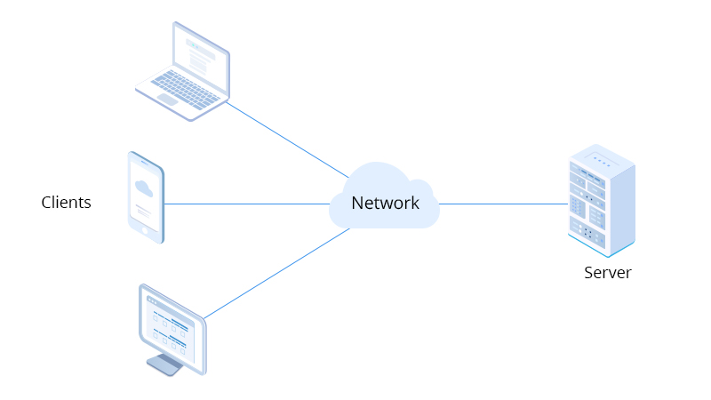
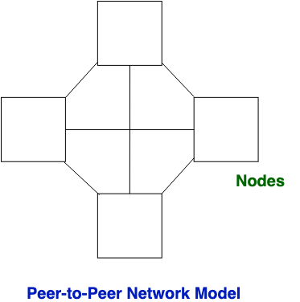

A computer network is made up of software and hardware components that allow one device to communicate with
another.
In the realm of network architecture, two prominent models stand out: "client-server" and "peer-to-peer."
Both facilitate computer connections for resource sharing, yet they differ significantly in operation. This
exploration will delve into their distinctive features and differences.
The client-server model structure is a centralized network in which the server hosts, provides, and maintains the majority of the client’s data and services.Multiple clients connect to one central server. A client is a computer or computer-controlled device that provides users with access to data on the remote server. Types of clients include smartphones, desktop computers, and laptops.

In this network model, a central server is a must and all the clients (computers) are connected to the central server for retrieving data or using its services.
In a peer-to-peer network, there is no central server; all computers are connected to each other and share resources like files, applications, and programs. Each computer can function as both a client and a server, enabling it to request and provide services

In a p2p network, all computers on the network are considered equal, with each workstation offering access to resources and data.The majority of contemporary operating systems, including Windows and Mac OS, come with software to implement peer.
The differences between Client-Server and Peer-to-Peer Networks mainly focus on eight aspects.
| Client-Server | Peer-to-Peer | |
|---|---|---|
| Basic | Multiple clients connect to a central server. | Each computer acts as a server or client. |
| Service | Clients request services, and the server responds. | Each computer can request or provide services. |
| Focus | Emphasis on information sharing. | Focus on connectivity. |
| Data | Stored and managedcentrally. | Each computer manages its own data. |
| Traffic Bottleneck | Multiple client requests may cause bottlenecks. | Less likely, as services come from multiple peers. |
| Expense | Setup can be expensive. | Setup costs are lower. |
| Scalability | Adding a new client is easy. | Network may suffer with more computers. |
| Usage | Common in enterprise networks | Found in homes, small businesses, and file-sharing networks |
Both client-server and peer-to-peer networks have unique advantages and limitations, making them suitable for different environments. Client-server networks offer centralized management and security, making them ideal for enterprise settings. However, they can be costly to set up and maintain. In contrast, peer-to-peer networks are more cost-effective and offer better scalability, making them popular for home and small business use. However, they can be more complex to manage and may lack centralized control. Understanding these factors is crucial for choosing the right network model for optimal performance in a given context.